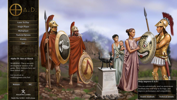
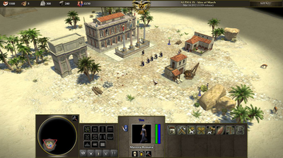
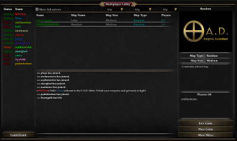

0 A.D.
Dieser Artikel wurde für die folgenden Ubuntu-Versionen getestet:
Ubuntu 16.04 Xenial Xerus
Ubuntu 14.04 Trusty Tahr
Zum Verständnis dieses Artikels sind folgende Seiten hilfreich:
Hinweis:
Die Entwicklung von 0 A.D. ist noch nicht abgeschlossen. Zur Zeit steht eine Alpha-Version bereit, die in erster Linie zu Testzwecken gedacht ist. Dennoch sind sowohl Einzelspiel-, als auch Mehrspielermodus grundsätzlich funktionsfähig und das Spiel kann schon jetzt richtig Spaß machen.
0 A. D.  ist ein Open Source Echtzeitstrategiespiel. Das Spiel deckt die Zeitspanne von 500 v. Chr. bis 500 n. Chr. ab und die wichtigsten Zivilisationen dieser Zeit sind enthalten bzw. sollen zukünftig hinzugefügt werden. Besonderen Wert wird auf die historischen Begebenheiten der Zivilisationen gelegt. So unterscheiden sich die Völker nicht nur ausschließlich vom Aussehen, sondern auch durch ihre Einheiten, Strukturen, Technologien und Spezialgebäude. In der aktuellsten Version sind zur Zeit zehn verschiedene Zivilisationen enthalten, beispielsweise die Hellenischen Staaten, die Keltischen Stämme oder die Römische Republik.
ist ein Open Source Echtzeitstrategiespiel. Das Spiel deckt die Zeitspanne von 500 v. Chr. bis 500 n. Chr. ab und die wichtigsten Zivilisationen dieser Zeit sind enthalten bzw. sollen zukünftig hinzugefügt werden. Besonderen Wert wird auf die historischen Begebenheiten der Zivilisationen gelegt. So unterscheiden sich die Völker nicht nur ausschließlich vom Aussehen, sondern auch durch ihre Einheiten, Strukturen, Technologien und Spezialgebäude. In der aktuellsten Version sind zur Zeit zehn verschiedene Zivilisationen enthalten, beispielsweise die Hellenischen Staaten, die Keltischen Stämme oder die Römische Republik.
|  |
| Hauptmenü |
Entstehung und Hintergründe¶
Den Anfang nahm das Projekt im Jahre 2001 als eine Modifikation für Age of Empires II: The Age of Kings. Aber ziemlich schnell stieß man an die Grenzen einer Modifikation und entschied sich, eine eigene Spiel-Engine zu programmieren. Aus dem ursprünglichen Projekt entstand schließlich zum einen ein Fantasy-Projekt namens The Last Alliance und zum anderen ein Projekt, das im Gegensatz zu vielen anderen Spielen einen großen Wert auf historische Fakten und Tatsachen legt: 0 A.D.
Im Juli 2009 gaben die Entwickler bekannt  , dass der zuvor geschlossene Quelltext nun unter der freien Lizenz GPLv2 der Öffentlichkeit zur Verfügung gestellt wird und das Arbeitsmaterial wie beispielsweise Bildschirmfotos und Videos unter der CC-BY-SA steht.
, dass der zuvor geschlossene Quelltext nun unter der freien Lizenz GPLv2 der Öffentlichkeit zur Verfügung gestellt wird und das Arbeitsmaterial wie beispielsweise Bildschirmfotos und Videos unter der CC-BY-SA steht.
Ausblick¶
Bis jetzt wurden regelmäßig in Abständen von ca. 2-4 Monaten neue Alpha-Versionen veröffentlicht. Mittelfristig ist die Fertigstellung eines ersten Teils geplant, der noch nicht alle Features enthält, aber bereits als stabile Version veröffentlicht werden kann. Beispielsweise werden historische Kampagnen noch fehlen. Die Entwickler haben schon gewisse Vorgaben gemacht, welche Features sie für diesen Teil möchten und welche eher später implementiert werden sollen. Am Schluss hängt das zu einem großen Teil auch davon ab, für welche Features sich interessierte Entwickler finden. Ein konkretes Datum für die Fertigstellung von Teil 1 kann zum jetzigen Zeitpunkt noch nicht angegeben werden.
Wer entsprechende Fähigkeiten und Interesse hat kann auch bei der Entwicklung von 0 A.D. mitmachen. Neue Entwickler sind immer willkommen. Bei den Links in diesem Artikel sind gute Anlaufstellen für Programmierer, Grafiker, Übersetzer und sonstige Entwickler aufgeführt.
Installation¶
Zur Installation des Spiels bieten sich zwei Möglichkeiten. Zum Einen kann 0 A.D. aus den offiziellen Ubuntu Paketquellen installiert werden. Je nach verwendeter Ubuntu Version steht hier ggf. nur eine ältere Version des Spiels bereit. Zum Anderen kann 0 A.D. aus einer PPA Fremdquelle installiert werden, in welcher die jeweils aktuelle Version des Spiels bereit steht.
In den folgenden Quellen steht jeweils die genannte Version des Spiels zur Installation bereit.
| Versionsübersicht | |
| Installationsquelle | 0 A.D. Spielversion |
| PPA (wfg/0ad) Fremdquelle | Alpha 21 |
| Ubuntu 16.04 Paketquelle | Alpha 20 |
| Ubuntu 14.04 Paketquelle | Alpha 15 |
Hinweis:
Es ist zu empfehlen, jeweils die neuste Alpha-Version von 0 A.D. zu verwenden. Die Entwicklung geht sehr schnell voran und in jeder Version sind viele neue Bugfixes und Features enthalten.
Paketquellen¶
Das Spiel kann über das folgende Paket aus den offiziellen Ubuntu Paketquellen installiert werden [1]:
0ad (universe)
 mit apturl
mit apturl
Paketliste zum Kopieren:
sudo apt-get install 0ad
sudo aptitude install 0ad
PPA (Fremdquelle)¶
Falls man sicherstellen möchte immer die aktuelle Version von 0 A.D. zu beziehen, kann man das Spiel über das PPA der Spielentwickler installieren [2].
Adresszeile zum Hinzufügen des PPAs:
ppa:wfg/0ad
Hinweis!
Zusätzliche Fremdquellen können das System gefährden.
Ein PPA unterstützt nicht zwangsläufig alle Ubuntu-Versionen. Weitere Informationen sind der  PPA-Beschreibung des Eigentümers/Teams wfg zu entnehmen.
PPA-Beschreibung des Eigentümers/Teams wfg zu entnehmen.
Damit Pakete aus dem PPA genutzt werden können, müssen die Paketquellen neu eingelesen werden.
Das Spiel kann nach dem Freischalten der PPA-Quelle über das folgende Paket installiert werden [1]:
0ad (PPA)
mit apturl
Paketliste zum Kopieren:
sudo apt-get install 0ad
sudo aptitude install 0ad
Spielen¶
|  |
| Spielszene |
Das Spiel wird über den Menüeintrag "Spiele → Strategie & Taktik → 0 A. D." gestartet. Die Bedienung von 0 A.D. orientiert sich stark an gängigen Echtzeitstrategiespielen. Es müssen Ressourcen gesammelt, Einheiten sowie Gebäude gebaut und die Gegenspieler besiegt werden. Jedoch gibt es bspw. bei Militäreinheiten den Unterschied, dass diese nicht nur kämpfen können, sondern ebenfalls Ressourcen sammeln und Gebäude bauen können. Außerdem kann die Zivilbevölkerung keine militärischen Einrichtungen errichten.
| Grundlegende Bedienung | |||
| Taste | Funktion | Taste | Funktion |
 | Einheiten selektieren |  | Ausgewählte Einheiten zur Mausposition bewegen |
 | Zoom |
⇧ + /
E und
Q | Kamera rotieren |
 | Kamera bewegen | ||
Im Hauptmenü öffnet sich über die Schaltfläche "Learn To Play" eine kurze Anleitung mit den wichtigsten Hinweisen zur Bedienung. Für eine ausführliche Anleitung sei auf das 0 A.D. Wiki verwiesen.
Alle möglichen Tastenkombinationen können auch immer in der entsprechenden Konfigurationsdatei gefunden werden (siehe Konfiguration).
Einzelspieler¶
Im Einzelspielermodus ("Single Player") kann über den Menüpunkt "Matches" ein Spiel auf einer beliebigen Karte gegen einen oder mehrere Computergegner gestartet werden.
Auf realen historischen Begebenheiten beruhende Kampagnen sind geplant, in der aktuellen Version aber noch nicht umgesetzt. Der entsprechende Menüpunkt ist deshalb noch nicht anwählbar.
Mehrspieler¶
|  |
| Multiplayer Lobby |
Über "Multiplayer" kann man über das Internet oder das lokale Netz gegen andere Mitstreiter antreten.
Multiplayer Lobby¶
Ab Alpha 15 ist eine Multiplayer Lobby im Spiel integriert. In der Lobby treffen sich Spieler, es gibt einen Chat, offene Spiele werden aufgelistet und auch eine Rangliste ist schon implementiert. Mit einem Klick kann einem der Spiele beigetreten werden. Zu beachten ist, dass Spiele auch in der Lobby immer von einem Mitspieler gehostet werden und, dass auch dort gewisse Anforderungen erfüllt sein müssen, damit das Hosten funktioniert. Ab Alpha 15 ist ein experimentelles UPnP implementiert, das automatisch versucht, eine entsprechende Port-Weiterleitung auf dem Router einzurichten. Da UPnP nicht überall eingeschaltet ist, muss eventuell trotzdem, wie im nächsten Abschnitt beschrieben, manuell eine Port-Weiterleitung konfiguriert werden.
Multiplayer direkt¶
Nachdem ein Mitspieler ein Netzwerkspiel über die Schaltfläche "Host Game" erstellt hat, können andere Spieler über die Schaltfläche "Join Game" daran teilnehmen. Hierzu muss die IP-Adresse des Spielers, der das Spiel erstellt hat, bekannt sein und in das erscheinende Fenster eingetragen werden. Beim Spielen über das Internet muss der Host des Spiels UDP Port 20595 vom Router auf seinen Rechner weitergeleitet haben.
Szenarioeditor¶
Über den Menüeintrag "Tools & Options → Scenario Editor" wird ein Editor gestartet, über den eigene Karten und Szenarien erstellt oder bestehende verändert werden können.
Konfiguration¶
Das Optionsmenü unter "Tools & Options → Options" ist seit Alpha 16 implementiert, beinhaltet aber noch nicht alle möglichen Einstellungen. Eine Vielzahl von Einstellungen können aber über eine Konfigurationsdatei[3] vorgenommen werden.
Hierfür muss im Homeverzeichnis die Datei ~/.config/0ad/config/local.cfg erstellt werden. In diese trägt man die gewünschten Einstellungen ein. Alle möglichen Optionen findet man in der Datei /usr/share/games/0ad/config/default.cfg, aus der die gewünschten Zeilen einfach kopiert werden können. Es ist nicht empfohlen die Einstellungen direkt in der Datei default.cfg vorzunehmen. Siehe auch die Hinweise im 0 A.D. Wiki .
Grafikeinstellungen¶
| Wichtige Einstellungen bei Grafikproblemen mit älteren Grafikkarten | |
| Option | Beschreibung |
renderpath=fixed | Achtung: Kann bei modernen Grafikkarten zu Geschwindigkeitsverlusten führen! Einige Grafik-Features wie Schatten werden bei dieser Einstellung nicht unterstützt. |
fancywater=false | Reduzierung von Wassereffekten. Wurde ab Alpha 12 durch andere Einstellungen ersetzt. |
particles=false | Deaktivieren von Partikel-Effekten |
shadows=false | Deaktivieren von Schatten |
| Neue erweiterte Grafikoptionen (Ab Alpha 11 - standardmäßig deaktiviert) | |
| Option | Beschreibung |
preferglsl=true | Wird benötigt für die folgenden Einstellungen |
smoothlos=true | Flüssigerer Übergang am Rand des Sichtfeldes von Einheiten ("Nebel des Krieges") |
gentangents=true | Benötigt für erweiterte Mapping-Effekte auf Gebäuden (AO-, Parallax-, Normal- und Specular Mapping). |
materialmgr.quality=x | Abhängig von der Hardware kann hier eine Qualität der Mapping-Effekte bestimmt werden. Für x die entsprechende Zahl einsetzen: 10 = alle Effekte 5 = einige Effekte 0 = keine Effekte. |
materialmgr.PARALLAX_DIST.max=x | Maximale Distanz wo Parallax-Mapping-Effekte angezeigt werden. Für x eine entsprechende Zahl einsetzen bzw. nicht konfigurieren um die Einstellungen aus der default.cfg zu verwenden. |
materialmgr.PARALLAX_HQ_DIST.max=x | Maximale Distanz wo Parallax-Mapping-Effekte in hoher Qualität angezeigt werden. Für x eine entsprechende Zahl einsetzen bzw. nicht konfigurieren um die Einstellungen aus der default.cfg zu verwenden. |
materialmgr.PARALLAX_VHQ_DIST.max=x | Maximale Distanz wo Parallax-Mapping-Effekte in sehr hoher Qualität angezeigt werden. Auf 30 stellen zum Einschalten. |
| Neue erweiterte Grafikoptionen (Ab Alpha 12) | |
| Option | Beschreibung |
postproc=true. | Postprocessing. Aktiviert weitere grafische Effekte wie Tiefenschärfe oder Bloom. Es kann sein, dass diese Einstellung auf einigen Grafikkarten mit bestimmten Treibern Grafikfehler verursacht. |
Verschiedene Wasser-Einstellungen | In der Version Alpha 12 wurde die Wasser-Darstellung verbessert und es stehen neue Optionen zur Verfügung. Diese Optionen können über das Einstellungs-Menu im Spiel oder in der Konfigurationsdatei angepasst werden. Hier wird nicht jede einzelne Einstellung beschrieben. Wer Interesse hat kann die Einstellungen anhand der Vorlage in der default.cfg selber nachvollziehen. |
Steuerung¶
Mögliche Bezeichnungen für Tasten, die in der Konfigurationsdatei verwendet werden können, sind in der Datei /usr/share/games/0ad/config/keys.txt aufgelistet.
Bei Ubuntu ist es sinnvoll denjenigen Befehlen andere Tasten zuzuweisen, die standardmäßig die Alt-Taste verwenden. Das funktioniert bei Ubuntu in den meisten Fällen nicht!
Bekannte Probleme¶
Wie gesagt befindet sich 0 A.D. momentan im Alpha-Stadium und obwohl es schon relativ gut spielbar ist, gibt es trotzdem noch einige Fehler oder nicht implementierte Features.
Grundsätzlich werden Fehler im Bugtracker des Projekts erfasst und gepflegt. Wenn ein Fehler auftritt, ist es am besten im Bugtracker zu schauen, ob das Problem bereits bekannt ist und gegebenenfalls im Forum für Bugreports zu melden.
Einige der für Ubuntu Benutzer wichtigsten Fehler sind in der folgenden Tabelle aufgelistet:
| Bekannte Probleme | ||
| Titel | Beschreibung | Workaround |
| Performance | Besonders gegen das Ende eines Spiels kann die Performance deutlich einbrechen. Der Hauptgrund dafür ist die Wegfindung der einzelnen Einheiten auf dem Spielfeld. Bei einem Spiel können hunderte Einheiten gleichzeitig in Bewegung sein und diese müssen ihren Weg von Punkt A nach Punkt B in der Spielwelt finden und dabei fixen und bewegliche Objekte ausweichen. Das ist ein relativ komplexes Problem, an der Optimierung wird aber gearbeitet. | Das Problem kann minimiert werden, in dem auf kleineren Karten und mit weniger Spielern und bevorzugt ohne KI gespielt wird. Karten mit weniger Bäumen sind für die Performance in der Regel besser. |

Infobox¶
| 0 A. D. | |
| Originaltitel: | 0 A. D. |
| Genre: | Echtzeitstrategie |
| Sprache: |        , Galicisch, Katalanisch (Stand Alpha 16) , Galicisch, Katalanisch (Stand Alpha 16) |
| Publisher: | Wildfire Games |
| Systemvoraussetzungen: | mind. 1 GHz CPU, moderne Grafikkarte (GeForce 3 oder besser), 512 MB RAM |
| Medien: | Download / PPA |
| Verfügbar für: | Windows, Mac OS X, Linux |
| Läuft mit: | nativ |
Links¶
0.A.D in der Wikipedia
Alpha 16 „Patañjali“, Ikhaya 05/2014
Alpha 15 „Osiris“, Ikhaya 01/2014
Alpha 14 „Naukratis“, Ikhaya 09/2013
Alpha 13 „Magadha“, Ikhaya 04/2013
0 A.D. – Die Schlacht kann beginnen!, Ikhaya 03/2010
OMG! Ubuntu! Artikel – Rezension zur Alpha 8, 01/2012
Erste Version von 0 A.D im Sommer geplant
, Pro-Linux 03/2010Open-Source Veröffentlichung
, 07/2009
- Erstellt mit Inyoka
-
 2004 – 2017 ubuntuusers.de • Einige Rechte vorbehalten
2004 – 2017 ubuntuusers.de • Einige Rechte vorbehalten
Lizenz • Kontakt • Datenschutz • Impressum • Serverstatus -
Serverhousing gespendet von